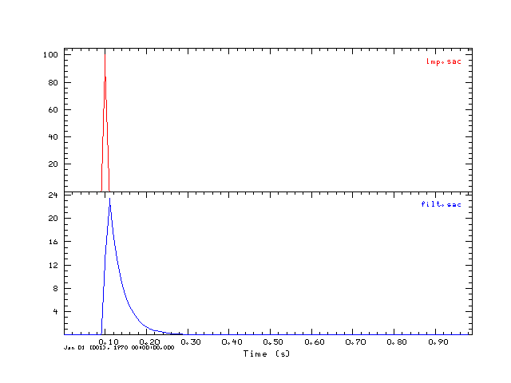

This tutorial further develops the use of the Computer Programs in
Seismology routines that work with the SAC format. It is assumed that
you have already downloaded and installed the current version of
Computer Programs in Seismology.
The library routines for
working with SAC files are described in the PDF file in the
distribution, e.g., in Appendix C of
PROGRAMS.330/DOC/GSAC.pdf/cps330g.pdf.
The C file containing the
routines is in
PROGRAMS.330/SUBS/sacsubc.c
with
header file with prototypes
PROGRAMS.330/SUBS/sacsubc.h
The examples given here describe
the minimum requirements for creating a valid SAC trace file.
Other information can be added latter using the ch (changeheader)
command of gsac or sac2000.
We will also use
the GNU gcc compiler to create the executables
This simple program will create two sac files, one consisting of a unit area impulse. This is called imp.sac. This impulse is passed through a bi-linear recursive digital lowpass filter to create filt.sac. gsac is used to display the trace and plotgif is used to create the graphic for this tutorial.
Copy the files sacsubc.c and sacsubc.h to your working directory. Then create the file writesac.c:
#include "sacsubc.h"
/* this is a sample program that creates two sac files
one of a simple impulse and the other with the impulse passed
through a lowpass recursive digital filter
*/
/* define the maximum number of points and the two float arrays */
#define NPTS 100
float x[NPTS];
float y[NPTS];
void outputsac(int npts, float *arr, float dt, char *filename);
main()
{
int i;
float dt = 0.01 ;
int offset = 10;
float wc=31.415927;
float f,a,b;
f = 2./(dt*wc);
a = 1. + f;
b = 1. - f;
/* initialize the impulse */
for(i=0;i< NPTS;i++)
x[i] = 0.0;
x[offset] = 1.0/dt ;
/* now apply a recursive digital filter to create the
output */
y[0] = 0.0;
for(i=1;i < NPTS; i++){
y[i] = (x[i]+x[i-1] - b*y[i-1])/a;
}
outputsac(NPTS, x, dt, "imp.sac");
outputsac(NPTS, y, dt, "filt.sac");
}
void outputsac(int npts, float *arr, float dt, char *filename)
{
/* create the SAC file
instead of using the wsac1 I will use the lower level
routines to provide more control on the output */
int nerr;
float b, e, depmax, depmin, depmen;
/* get the extrema of the trace */
scmxmn(arr,npts,&depmax,&depmin,&depmen);
/* create a new header for the new SAC file */
newhdr();
/* set some header values */
setfhv("DEPMAX", depmax, &nerr);
setfhv("DEPMIN", depmin, &nerr);
setfhv("DEPMEN", depmen, &nerr);
setnhv("NPTS ",npts,&nerr);
setfhv("DELTA ",dt ,&nerr);
b = 0;
setfhv("B ",b ,&nerr);
setihv("IFTYPE ","ITIME ",&nerr);
e = b + (npts -1 )*dt;
setfhv("E ",e ,&nerr);
setlhv("LEVEN ",1,&nerr);
setlhv("LOVROK ",1,&nerr);
setlhv("LCALDA ",1,&nerr);
/* put is a default time for the plot */
setnhv("NZYEAR", 1970, &nerr);
setnhv("NZJDAY", 1, &nerr);
setnhv("NZHOUR", 0, &nerr);
setnhv("NZMIN" , 0, &nerr);
setnhv("NZSEC" , 0, &nerr);
setnhv("NZMSEC", 0, &nerr);
/* output the SAC file */
bwsac(npts,filename,arr);
}
gcc writesac.c sacsubc.c -o writesac
On LINUX/Unix the executable is writesac. On Windows
under CYGWIN, the executable is actually called writesac.exe but
you can execute the program by just enterning writesac at the
prompt in both environments.
The shell script DOIT
does the compile and also used gsac and plotgif to
create the following image:

This simple program will read the file filt.sac, list header values and the time series.
Copy the files sacsubc.c and sacsubc.h to your working directory. Then create the file readsac.c:
#include "sacsubc.h"
#include <stdio.h>
/* define the maximum number of points and the float array for
storing the time series. Note I use calloc() in this C library
so that array is defined in the brsac. */
#define NPTS 100
float *x;
main()
{
int npts, nerr;
float dt,depmax, depmin, b, e;
int i;
brsac(NPTS,"filt.sac", &x, &nerr);
/* now lets get some header values */
getfhv("DELTA",&dt,&nerr);
printf("DELTA : %f\n",dt);
getfhv("DEPMAX",&depmax,&nerr);
printf("DEPMAX : %f\n",depmax);
getfhv("DEPMIN",&depmin,&nerr);
printf("DEPMIN : %f\n",depmin);
/* this is necessary since the actual number of points
may be less than the array dimension. brsac NEVER
reads in more than the maximum allowable numebr of
points and resets the internal header value so that
the npts returned here never is greater than NPTS */
getnhv("NPTS", &npts, &nerr);
printf("NPTS : %f\n",npts);
/* output the time series */
for(i=0;i < npts ; i ++)
printf("x[%d] = %f\n",i,x[i]);
}
gcc readsac.c sacsubc.c -o readsac
On LINUX/Unix the executable is readsac. On Windows
under CYGWIN, the executable is actually called readsac.exe but
you can execute the program by just enterning readsac at the
prompt in both environments.
This is the output from running the command readsac:
DELTA : 0.010000 DEPMAX : 23.465153 DEPMIN : 0.000000 NPTS : -0.171413 x[0] = 0.000000 x[1] = 0.000000 x[2] = 0.000000 x[3] = 0.000000 x[4] = 0.000000 x[5] = 0.000000 x[6] = 0.000000 x[7] = 0.000000 x[8] = 0.000000 x[9] = 0.000000 x[10] = 13.575525 x[11] = 23.465153 x[12] = 17.094118 x[13] = 12.452886 x[14] = 9.071796 x[15] = 6.608708 x[16] = 4.814374 x[17] = 3.507221 x[18] = 2.554974 x[19] = 1.861272 x[20] = 1.355917 x[21] = 0.987771 x[22] = 0.719581 x[23] = 0.524207 x[24] = 0.381879 x[25] = 0.278195 x[26] = 0.202662 x[27] = 0.147637 x[28] = 0.107552 x[29] = 0.078351 x[30] = 0.057078 x[31] = 0.041580 x[32] = 0.030291 x[33] = 0.022067 x[34] = 0.016075 x[35] = 0.011711 x[36] = 0.008531 x[37] = 0.006215 x[38] = 0.004527
Last changed February 12, 2008